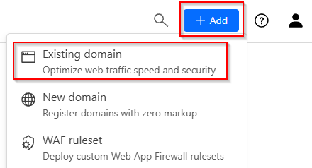
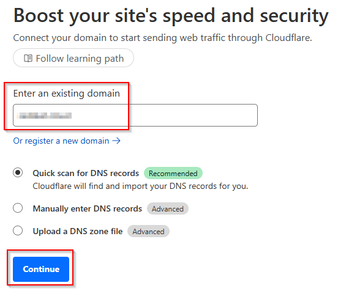

Published on: 2025-03-14
Guacamole and Cloudflare
Estimated time to read: 4 minutes
Guacamole is a remote access solution. It uses a HTML 5 web front end to allow access to systems using remote access protocols like RDP and VNC. A common use case for it is providing access to systems behind a firewall.
In some situations, this access may be complicated by factors such as not being able to or being unwilling to open ports. Cloudflare has a Tunnel service where access can be given to systems in this situation without the need for inbound ports. The architecture of this arrangement is shown below:
Cloudflare Domain Setup
Name Server Configuration Changes
Updating the name servers will usually take a while to become active. This will potentially cause a blocker on progressing further steps. It is suggested to do these steps well in advance
- Go to Cloudflare website and create an account
-
Login to the dashboard, click on the Add button in the top right and select Existing domain

-
Enter the domain name and click Continue

-
Select the Free plan
- Click the Continue to Activation button
- Follow the instructions to update the name server records
- Click the Continue button
Guacamole Server - Install
- Update packages using
- Install the prerequisite packages
sudo apt install build-essential libcairo2-dev libjpeg-turbo8-dev \ libpng-dev libtool-bin libossp-uuid-dev libvncserver-dev \ freerdp2-dev libssh2-1-dev libtelnet-dev libwebsockets-dev \ libpulse-dev libvorbis-dev libwebp-dev libssl-dev \ libpango1.0-dev libswscale-dev libavcodec-dev libavutil-dev \ libavformat-dev - Get the latest release URL from the releases page and use wget to download it to the server:
- Unzip the download
- Change to the extracted folder
- Run the build and install commands
- Run the command to update the installed library cache
Guacamole Server - Service Config
- Reload systemd
- Enable and start the service
- Verify it’s running
Guacamole Frontend - Install
- Add the Ubuntu 22.04 repo
- Install Tomcat 9 and support packages
- Download the frontend package
- Move the downloaded war file
- Restart the Tomcat and Guacmole services
- Install database for database auth
- Run the mysql security script to set a password for the database
- Download the mySQL Java connector
- Unzip the download and move to the guac lib folder
- Download the JDBC Auth plugin
- Unzip and move files
- Login to the MariaDB shell
- Create the user database and user
- Exit the MariaDB shell
- Change to the mySQL schema directory
- Import the schema files
- Edit the guac properties file
- Add connection details for the database
- Restart services
Guacamole Frontend - Install
- Access the frontend’s URL (ie. http://192.168.1.x:8080/guacamole/), you should see a login page
- Login with the default credentials of guacadmin
- Change the default password
- Add required connections